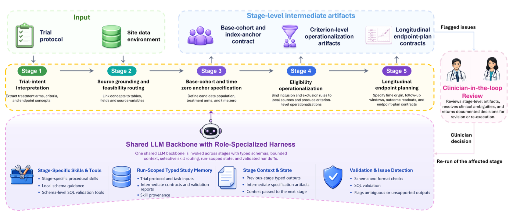

02
Selected research
Current work across patient simulation, evidence-grounded clinical support, target trial
emulation, and longitudinal risk modeling.

AI Health Lab · 2026
EmoPatient
An emotion-directed patient simulator that generates dynamic, interpretable
responses for realistic palliative care communication training.
Patient simulation · Multi-agent systems · Emotional modeling

Dell Medical School · 2025–present
Consensus-Anchored Clinical Chatbot for Long COVID
A clinical support system that brings together curated consensus guidance, PubMed
literature, clinical trials, and living systematic-review evidence.
Retrieval-augmented generation · Clinical NLP · Evidence provenance
Accepted at DAIH @ COLM 2026
Paper ↗

Mayo Clinic · 2026
TTE-Harness for Target Trial Operationalization
A contract-governed agent framework that translates target trial protocols into
site-specific EHR study definitions with staged skills, validation, and clinician review.
Clinical agents · Target trial emulation · Human-in-the-loop review
Manuscript in preparation
MACE prediction
Mayo Clinic · 2026
LLM-Based MACE Prediction After Liver Transplant
An extractor-scorer pipeline that turns three years of multimodal EHR timelines
into clinically relevant events for five-year cardiovascular risk prediction.
Longitudinal EHR · Risk modeling · Efficient adaptation
Manuscript in preparation
AMIA 2026
Yining Wu, Tianshu Du, Jinrui Fang, Chi Zhang, Sonal Admane, Ying Ding
DAIH @ COLM 2026
Yining Wu, Philip DiGiacomo, Ying Ding, William Brode
Preprint · 2026
Xu Yang, Zhizhou Sha, Junbo Li, Jian Yu, Yifan Sun, Matthew Zhao, Jinrui Fang,
Xinyue Guo, Yining Wu, Xu Hu, Yifu Luo, Qiang Liu, Zhangyang Wang
04
Experience and education
Research experience
May–Aug 2026
Data Science & AI Research Intern
Mayo Clinic · Jacksonville, Florida
Clinical risk modeling and automated EHR-based target trial emulation.
Jan 2026–present
Research Assistant
AI Health Lab, UT Austin
Emotion-directed patient simulation for palliative care communication training.
Oct 2025–Jun 2026
Graduate Research Assistant
Dell Medical School, UT Austin
Evidence-grounded clinical decision support for Long COVID.
Education
2025–2027
M.S. in Information Studies
The University of Texas at Austin
GPA: 4.0 / 4.0
2020–2025
B.Eng. in Vehicle Engineering
Tongji University
GPA: 90.5 / 100
Methods and tools
Python · SQL · PyTorch · Transformers · Clinical NLP · Multimodal learning ·
Multi-agent systems · Retrieval-augmented generation · Ablation and error analysis